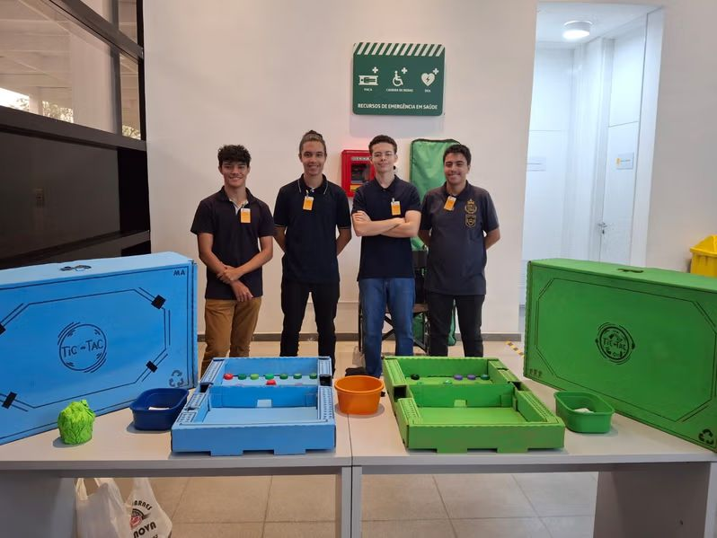
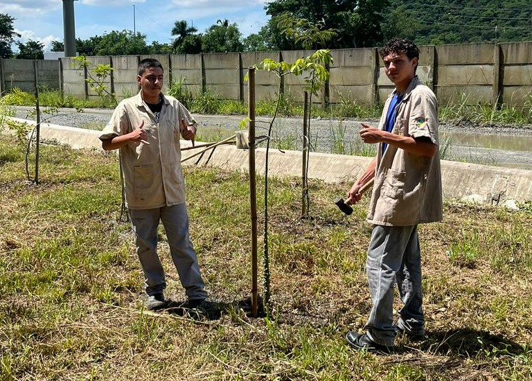

Sobre Mim
Estudante de Análise e Desenvolvimento de Sistemas, integrante do Programa Petrobras Jovem Aprendiz (PPJA) e com formação prévia na área ambiental, industrial e de tecnologia. Focado em transformar processos e desafios em soluções através da tecnologia. As qualidades que eu possuo é a de ser prestativo e focado no serviço.
Linguagens & Tecnologias
 C#
C#
 HTML5
HTML5
 CSS3
CSS3
 JavaScript
JavaScript
Projetos

Tic-Tac
Projeto de gamificação voltado à conscientização sobre preservação ambiental e sustentabilidade de forma lúdica e educativa. O projeto foi apresentado duas vezes na Refinaria Presidente Bernardes, em Cubatão, com a parceria da ABC Marbas e da Petrobras em conjunto com a ETEC de Cubatão.

SimpleHole
Aplicativo/sistema feito para calcular o RPM da furadeira, a fim de auxiliar os alunos do SENAI nas aulas práticas na oficina, feito inicialmente em C#, e agora portado para WEB utilizando JS, HTML e CSS.
Formações acadêmicas

SENAI Hessel Horácio Cherkassky
Curso: Técnico em Manutenção de Máquinas Industriais.
Status:Em Andamento
Instituto Federal Câmpus Cubatão.
Curso: Tecnólogo em Análise e Desenvolvimento de Sistemas.
Status:Em Andamento

Etec de Cubatão
Curso: Técnico em Meio Ambiente.
Status:Concluído
Experiência Profissional

Cepema Poli-USP
Trabalhei no Centro de Capacitação e Pesquisa ao Meio Ambiente (CEPEMA Poli-USP) como estagiário do dia 14/01/2026 até o dia 08/04/2026, sendo responsável pela manutenção de mudas nativas da mata atlântica, além de participar como educador ambiental em atividades com foco no aprendizado dos visitantes.